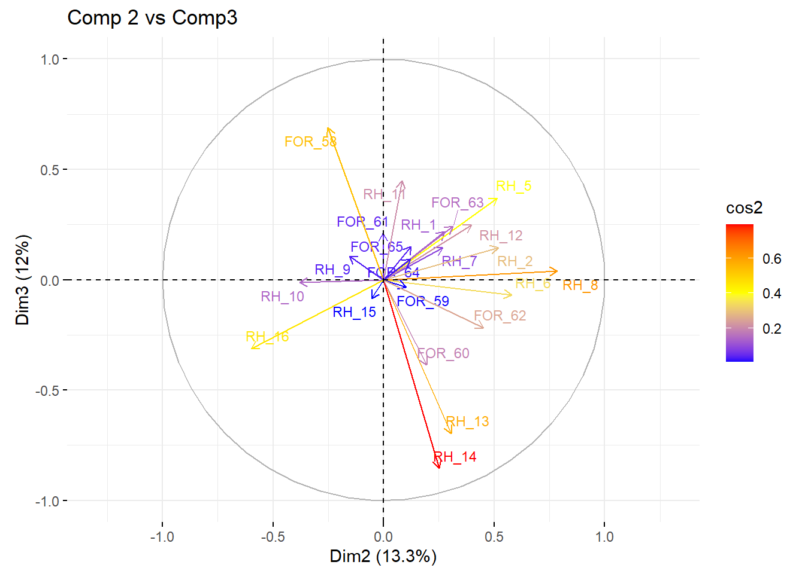
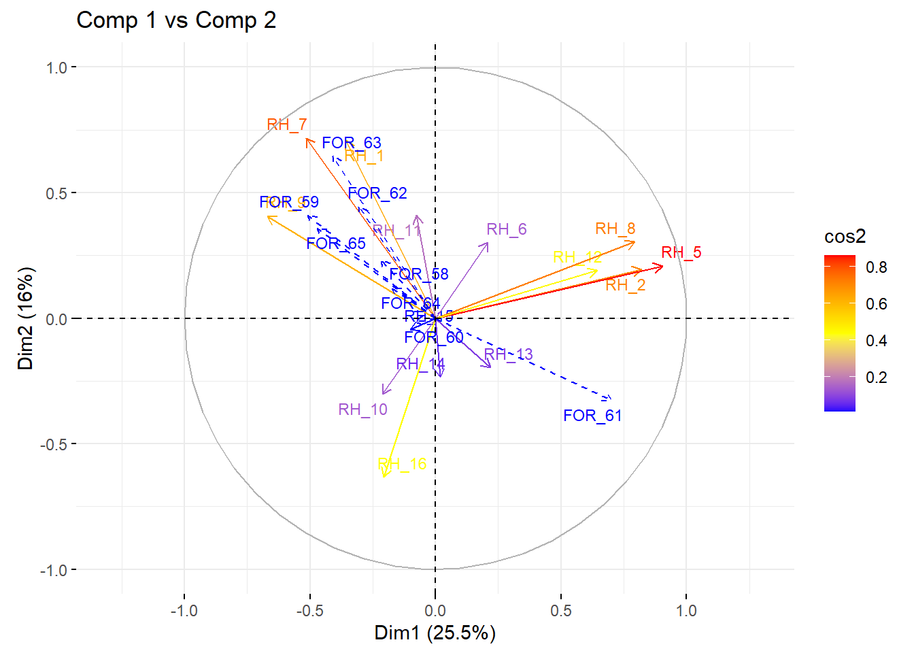
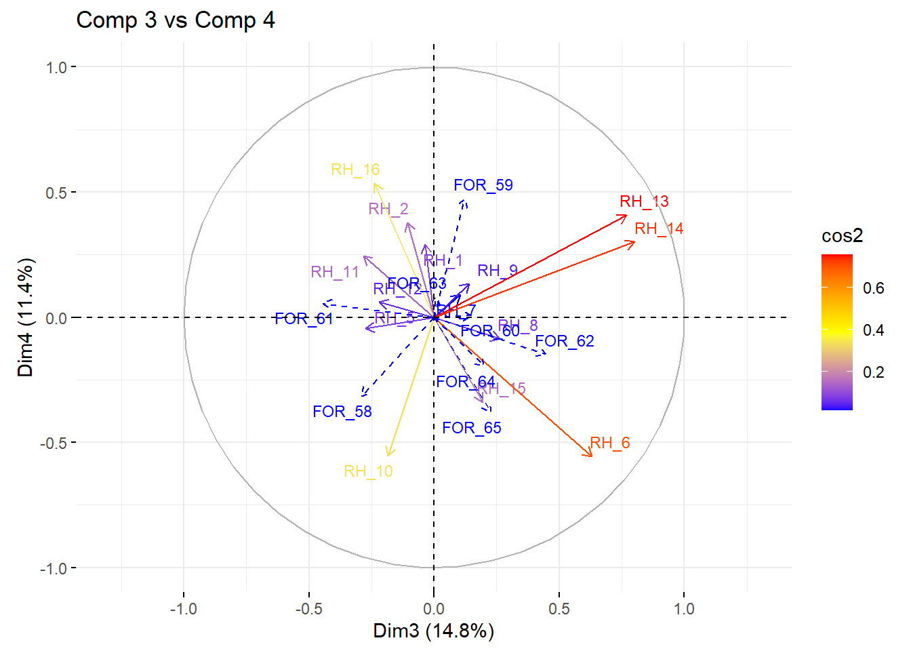
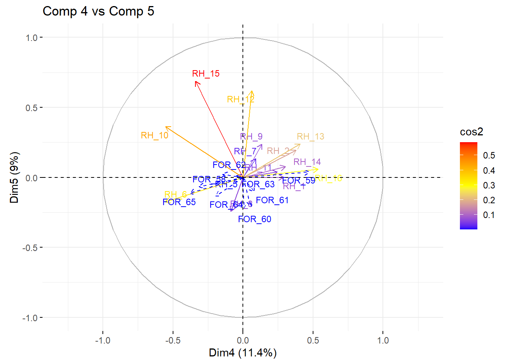
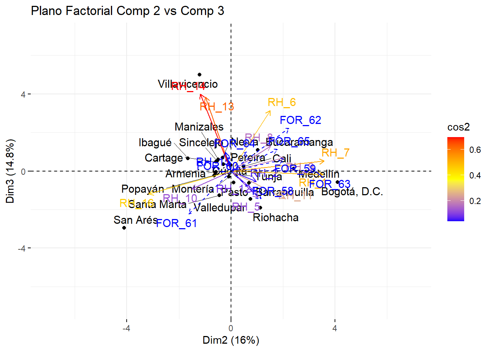
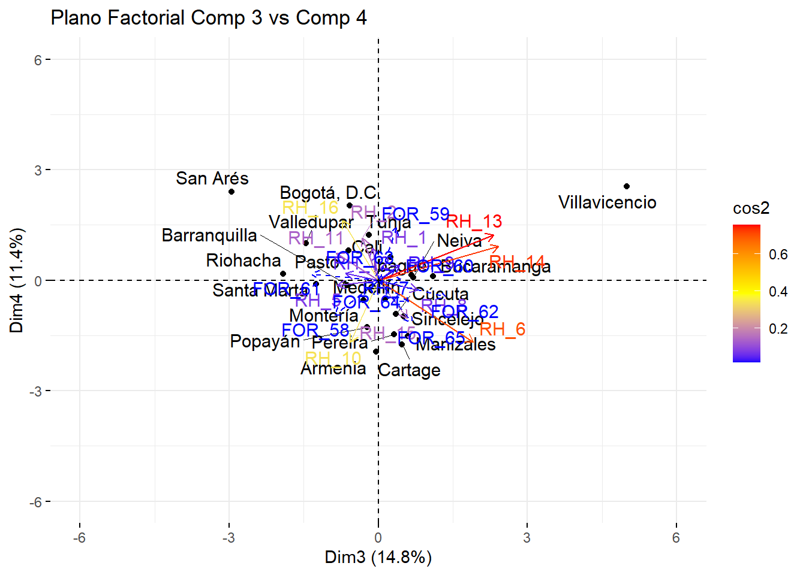

| eigenvalue | percentage of variance | cumulative percentage of variance | |
|---|---|---|---|
| comp 1 | 6.015 | 27.340 | 27.340 |
| comp 2 | 2.935 | 13.339 | 40.679 |
| comp 3 | 2.633 | 11.970 | 52.650 |
| comp 4 | 2.380 | 10.816 | 63.466 |
| comp 5 | 1.592 | 7.238 | 70.704 |
| comp 6 | 1.392 | 6.328 | 77.032 |
| comp 7 | 1.193 | 5.421 | 82.453 |
| comp 8 | 0.960 | 4.362 | 86.815 |
| comp 9 | 0.851 | 3.869 | 90.684 |
| comp 10 | 0.532 | 2.417 | 93.101 |
| comp 11 | 0.433 | 1.968 | 95.069 |
| comp 12 | 0.336 | 1.529 | 96.598 |
| comp 13 | 0.225 | 1.024 | 97.622 |
| comp 14 | 0.178 | 0.809 | 98.431 |
| comp 15 | 0.150 | 0.682 | 99.114 |
| comp 16 | 0.087 | 0.396 | 99.509 |
| comp 17 | 0.044 | 0.198 | 99.707 |
| comp 18 | 0.033 | 0.150 | 99.857 |
| comp 19 | 0.022 | 0.102 | 99.959 |
| comp 20 | 0.009 | 0.041 | 100.000 |
| comp 21 | 0.000 | 0.000 | 100.000 |
Taller Tres
Análisis de componentes principales (ACP)
ACP para las variables
Se toma las variables conformando por el conjunto de variables de recursos humanos(RH) y de Fortalezas economicas (FOR) de las empresas, este agrupamiento de variables se puede ver claramente en la siguiente tabla.
| Caracteristica de la variable | Variable |
|---|---|
| Población de la ciudad | RH_1 |
| Tasa de Crecimiento de la Población | RH_2 |
| Tasa de Ocupación | RH_3 |
| Tasa Global de Participación | RH_4 |
| Analfabetismo Absoluto | RH_5 |
| Cobertura bruta en primaria y secundaria | RH_6 |
| Cobertura bruta en educación superior | RH_7 |
| Relación alumno-profesor | RH_8 |
| Calidad de los colegios | RH_9 |
| Capacitación para el trabajo | RH_10 |
| Cobertura en salud | RH_11 |
| Mortalidad Infantil | RH_12 |
| Delitos contra la formación sexual | RH_13 |
| Violencia Intrafamiliar | RH_14 |
| Homicidios | RH_15 |
| Secuestros | RH_16 |
| Crecimiento PIB per cápita | FOR_58 |
| PIB per cápita | FOR_59 |
| Tasa de Entrada Neta de Empresas | FOR_60 |
| NBI | FOR_61 |
| Población Urbana sobre la Población Total | FOR_62 |
| Índice de Densidad Industrial | FOR_63 |
| Industrias Altas en conocimiento | FOR_64 |
| Índice de Especialización Industrial | FOR_65 |
En las variables anteriomente mostradas se procede a realizar el ACP
Se calcula el número aproximado de componentes hallando los valores propios de la siguiente matriz que tiene la siguiente forma
\(Y = \sum_{\alpha=1}^{p} \sqrt{\lambda_{\alpha}} v_{\alpha} u_{\alpha}'\)
Donde \(\lambda\) son los valores propios es decir que son daran la información necesaria para asignar las componentes a las variables.
Vemos que según los valores propios estos recogen el \(70.704 \%\) de la varianza de los datos con cinco componentes, entonces se procede ha análizar si estos componentes explican las relaciones que hay entre los dos conjuntos de variables.
Ahora se mostrara, la tabla correspondiente a las correlaciones respecto a las componentes propuestas vemos que existen variables que tienen una correlacion buena, es decir que si son en forma positiva son mayores o iguales a \(0.6\) o en el caso negativo que son menores o iguales a \(-0.6\). Con esto podemos definir que si las componentes representan la variabilidad de los datos y ademas ver las variables que son relevantes en el estudio.
| CorF1 | CorF2 | CorF3 | CorF4 | CorF5 | ContriF1 | ContriF2 | ContriF3 | ContriF4 | ContriF5 | CosF1 | CosF2 | CosF3 | CosF4 | CosF5 | |
|---|---|---|---|---|---|---|---|---|---|---|---|---|---|---|---|
| RH_7 | 0.793 | 0.269 | 0.145 | 0.323 | 0.028 | 10.445 | 2.459 | 0.795 | 4.376 | 0.048 | 0.628 | 0.072 | 0.021 | 0.104 | 0.001 |
| FOR_65 | 0.762 | 0.125 | 0.150 | -0.404 | -0.147 | 9.651 | 0.536 | 0.853 | 6.848 | 1.359 | 0.581 | 0.016 | 0.022 | 0.163 | 0.022 |
| FOR_63 | 0.745 | 0.313 | 0.242 | 0.290 | -0.208 | 9.220 | 3.348 | 2.221 | 3.540 | 2.706 | 0.555 | 0.098 | 0.058 | 0.084 | 0.043 |
| RH_9 | 0.709 | -0.155 | 0.107 | 0.099 | 0.477 | 8.365 | 0.817 | 0.438 | 0.411 | 14.296 | 0.503 | 0.024 | 0.012 | 0.010 | 0.228 |
| FOR_59 | 0.700 | 0.103 | -0.035 | 0.557 | 0.030 | 8.141 | 0.359 | 0.046 | 13.030 | 0.058 | 0.490 | 0.011 | 0.001 | 0.310 | 0.001 |
| FOR_62 | 0.686 | 0.453 | -0.217 | -0.161 | -0.081 | 7.816 | 6.991 | 1.792 | 1.088 | 0.408 | 0.470 | 0.205 | 0.047 | 0.026 | 0.007 |
| RH_1 | 0.579 | 0.277 | 0.217 | 0.535 | -0.028 | 5.573 | 2.613 | 1.787 | 12.033 | 0.051 | 0.335 | 0.077 | 0.047 | 0.286 | 0.001 |
| FOR_64 | 0.400 | 0.122 | 0.094 | -0.311 | -0.110 | 2.657 | 0.504 | 0.333 | 4.064 | 0.766 | 0.160 | 0.015 | 0.009 | 0.097 | 0.012 |
| FOR_58 | 0.219 | -0.252 | 0.688 | -0.385 | 0.214 | 0.798 | 2.166 | 17.996 | 6.231 | 2.886 | 0.048 | 0.064 | 0.474 | 0.148 | 0.046 |
| RH_11 | 0.210 | 0.083 | 0.449 | 0.214 | 0.205 | 0.733 | 0.236 | 7.643 | 1.932 | 2.628 | 0.044 | 0.007 | 0.201 | 0.046 | 0.042 |
| FOR_60 | 0.198 | 0.195 | -0.387 | 0.073 | -0.620 | 0.650 | 1.298 | 5.681 | 0.221 | 24.127 | 0.039 | 0.038 | 0.150 | 0.005 | 0.384 |
| RH_6 | 0.173 | 0.580 | -0.068 | -0.669 | -0.028 | 0.498 | 11.472 | 0.177 | 18.782 | 0.048 | 0.030 | 0.337 | 0.005 | 0.447 | 0.001 |
| RH_15 | 0.102 | -0.054 | -0.084 | -0.318 | 0.453 | 0.173 | 0.101 | 0.271 | 4.261 | 12.898 | 0.010 | 0.003 | 0.007 | 0.101 | 0.205 |
| RH_14 | 0.095 | 0.251 | -0.854 | -0.060 | 0.214 | 0.149 | 2.141 | 27.706 | 0.153 | 2.880 | 0.009 | 0.063 | 0.730 | 0.004 | 0.046 |
| RH_10 | 0.022 | -0.380 | -0.012 | -0.343 | -0.040 | 0.008 | 4.924 | 0.006 | 4.957 | 0.098 | 0.000 | 0.144 | 0.000 | 0.118 | 0.002 |
| RH_13 | -0.107 | 0.305 | -0.697 | 0.097 | 0.461 | 0.191 | 3.170 | 18.432 | 0.392 | 13.355 | 0.011 | 0.093 | 0.485 | 0.009 | 0.213 |
| RH_16 | -0.191 | -0.599 | -0.312 | 0.524 | -0.087 | 0.605 | 12.207 | 3.685 | 11.522 | 0.472 | 0.036 | 0.358 | 0.097 | 0.274 | 0.008 |
| RH_8 | -0.422 | 0.786 | 0.039 | -0.057 | -0.164 | 2.966 | 21.064 | 0.057 | 0.136 | 1.681 | 0.178 | 0.618 | 0.002 | 0.003 | 0.027 |
| RH_12 | -0.467 | 0.399 | 0.249 | 0.145 | 0.384 | 3.624 | 5.414 | 2.357 | 0.890 | 9.240 | 0.218 | 0.159 | 0.062 | 0.021 | 0.147 |
| RH_2 | -0.629 | 0.519 | 0.146 | 0.315 | 0.267 | 6.581 | 9.195 | 0.815 | 4.173 | 4.480 | 0.396 | 0.270 | 0.021 | 0.099 | 0.071 |
| RH_5 | -0.728 | 0.513 | 0.371 | 0.053 | -0.042 | 8.811 | 8.985 | 5.234 | 0.116 | 0.113 | 0.530 | 0.264 | 0.138 | 0.003 | 0.002 |
| FOR_61 | -0.862 | -0.003 | 0.210 | 0.142 | -0.293 | 12.344 | 0.000 | 1.674 | 0.846 | 5.403 | 0.742 | 0.000 | 0.044 | 0.020 | 0.086 |
Al realizar el análisis de las cinco componentes podemos escoger las variables que aportan información a cada componente que tiene la siguiente agrupación.
Componente uno:
Este grupo de variables hacer referencia ha una forma de medir el desarrollo a un nivel social con un enfoque empresarial.
| Caracteristica de la variable | Variable |
|---|---|
| Tasa de Crecimiento de la Población | RH_2 |
| Analfabetismo Absoluto | RH_5 |
| Cobertura bruta en educación superior | RH_7 |
| Calidad de los colegios | RH_9 |
| PIB per cápita | FOR_59 |
| NBI | FOR_61 |
| Población Urbana sobre la Población Total | FOR_62 |
| Índice de Densidad Industrial | FOR_63 |
| Índice de Especialización Industrial | FOR_65 |
Componente DOS:
Para la componente dos son relevantes dos variables como se muestra en la tabla, estas pueden tener mayor sentido mas adelante cuando se haga la relación entre componentes pero si podemos decir que son contrarias, por ejemplo entre mas secuentros hay una menor relación entre alumno-profesor.
| Caracteristica de la variable | Variable |
|---|---|
| Relación alumno-profesor | RH_8 |
| Secuestros | RH_16 |
Componente TRES:
En este componente tenemos que hay dos variables que son de caracter delictivo contra el crecimiento de PIB per capital, las cuales son contrarias, es decir que por ejemplo un menor crecimiento PIB per capital, hace que hayan mayores delitos contra la formación sexual y violencia intrafamiliar.
| Caracteristica de la variable | Variable |
|---|---|
| Delitos contra la formación sexual | RH_13 |
| Violencia Intrafamiliar | RH_14 |
| Crecimiento PIB per cápita | FOR_58 |
Componente CUATRO:
Esta componente estaria representada con la siguientes variables, Poblacion de la ciudad, secuestros y PIB per capital, en comparación con la cobertura bruta en primaria y secundaria, esto se puede ver de la siguiente forma, si la cobertura bruta en primaria y secundaria es mayor vemos que las varibles Poblacion de la ciudad, secuestros y PIB per capital tienden a ser bajas.
| Caracteristica de la variable | Variable |
|---|---|
| Cobertura bruta en primaria y secundaria | RH_6 |
| Población de la ciudad | RH_1 |
| Secuestros | RH_16 |
| PIB per capital | FOR_59 |
Componente CINCO:
Esta componente estaria representada solamente con la siguiente variable.
| Caracteristica de la variable | Variable |
|---|---|
| Tasa de Entrada Neta de Empresas | FOR_60 |
Análisis de los circulos de correlación
Se dara la interpretación de las relaciones que podrian existir entre las componentes respecto a las variables del estudio, con esto se podrian hallar agrupaciones de variables y ademas dar interpretación de los ejes factoriales.
Componente uno vs Componente dos
El grafíco muestra que hay un agrupamiento de variables en la parte derecha del circulo de correlación; esto nos dice que estas variables tienen una relación entre ellas, lo cual como antes se habia dicho que el eje 1 representa el desarrollo a un nivel social con un enfoque empresarial y el eje 2 representa la relación alumno profesor y los secuestros, es decir que al ver en mas detalle las variables el agrupamiento de variables en la parte derecha hace referencia que entre mas desarrollo social con enfoque empresarial, puede causar o es consecuencia de que la relación alumno-profesor sea buena. En caso contrario veriamos que entre menos desarrollo social, los secuestros serian muy relevantes.
Componente dos vs Componente tres
El grafíco muestra que hay un agrupamiento de variables en la parte derecha del circulo de correlación esto nos dice que estas variables tienen una relación entre ellas, lo cual como antes se habia dicho que el eje 2 representa la relación alumno profesor y los secuestros y el eje 3 es de caracter delictivo contra el crecimiento de PIB per capital, es decir que las variables agrupadas en la derecha explican que entre mejor relación alumno profesor hay un mayor crecimiento de PIB per capital, en caso contrario entre mas bajo crecimiento del PIB per capital hace que hayaa mas criminalidad en el ambito de secuestros, violencia intrafamiliar y delitos contra la formación sexual.

Componente tres vs Componente cuatro
En esta relación de componentes vemos que las variables estan mas dispersas y que los vectores estan mas hacia el centro, es decir que no tienen buena correlación con el componente, pero si sabemos que hay algunas variables que son representativas a cada componente, como se puede ver en el circulo de correlación.

Componente cuatro vs Componente cinco
En el circulo de correlación vemos que las variables estan bastante distribuidas al rededor del centro y sus correlaciones son muy bajas, pero si sabemos que hay una variable que tiene buena correlación que es la Tasa de Entrada Neta de Empresas, la cual es una variable que no es representativa en las otras componentes pero si en la componente cinco, lo cual podria aportar información importante al estudio.
Análisis para las ciudades
Plano Factorial para la componente uno vs componente dos
Vemos que las ciudades que tienen un buen desarrollo social, son Bogotá, Bucaramanga y medellin ha comparación con Riohacha que tiene un pesimo desarrollo social pero un mediamente una buena relación con Alumno profesor, ademas vemos que San Andres no tiene un buen desarrollo social y tambien vemos que tiene alta cantidad de secuestros.
Plano Factorial para la componente dos vs componente tres
Notamos que Riohacha y Medellin tienen mejor relación alumno profesor, lo cual permite un mayor crecimiento de PIB per capital, lo que es en caso contrario con San Andres entre mas bajo crecimiento del PIB per capital hace que haya mas criminalidad en el ambito de secuestros, violencia intrafamiliar y delitos contra la formación sexual. Un caso extraño es Villavivencio, ya que esta ciudad tiene un buena relación Alumno-profesor pero esto el nivel de delitos.
Plano Factorial para la componente tres vs componente cuatro
Notamos que hay tres ciudades destacadas, las cuales se les dara su respectivo análisis.
Bogotá: Es un ciudad en la cual tiene un buen Crecimiento PIB per cápita y ademas tiene gran población, un índice de secuestros altos y un PIB per capital bueno.
San Andres: Esta ciudad tiene un bajo crecimiento PIB per cápita y ademas tiene gran población, un índice de secuestros altos y un PIB per capital bueno.
Villavicencio: Esta ciudad tiene el mas bajo Crecimiento PIB per cápita y el un índice de delitos alto.
Plano Factorial para la componente cuatro vs componente cinco
Acá se hará análisis sobre la componente cinco que representa la Tasa de Entrada Neta de Empresas, notamos que hay dos ciudades que son representativas para este componente.
Villavicencio: Vemos que las empresas en esta ciudad tienden a perder dinero despues de pagar los gastos operativos de la empresa.
Sincelejo: Notamos que las empresas en esta ciudad tienden a tener ganancias.
Análisis tomando al conjunto de variables Fortalezas económicas(FOR) como ilustrativas
Se realiza el análisis tomando el grupo de variables Fortalezas económicas como suplementarias para implementar el ACP, con esto se trata de encontrar el número de componentes optimos que representen la variabilidad de los datos.
| eigenvalue | percentage of variance | cumulative percentage of variance | |
|---|---|---|---|
| comp 1 | 3.571 | 25.510 | 25.510 |
| comp 2 | 2.239 | 15.993 | 41.504 |
| comp 3 | 2.072 | 14.797 | 56.301 |
| comp 4 | 1.603 | 11.448 | 67.749 |
| comp 5 | 1.258 | 8.988 | 76.737 |
| comp 6 | 1.192 | 8.513 | 85.249 |
| comp 7 | 0.771 | 5.509 | 90.758 |
| comp 8 | 0.461 | 3.296 | 94.054 |
| comp 9 | 0.328 | 2.340 | 96.394 |
| comp 10 | 0.215 | 1.538 | 97.932 |
| comp 11 | 0.129 | 0.920 | 98.852 |
| comp 12 | 0.094 | 0.673 | 99.524 |
| comp 13 | 0.054 | 0.384 | 99.909 |
| comp 14 | 0.013 | 0.091 | 100.000 |
Vemos que según los valores propios estos recogen el \(76.737 \%\) de la varianza de los datos con cinco componentes, entonces se procede ha análizar si estos componentes son representativos.
Ahora se mostrara, la tabla correspondiente a las correlaciones respecto a las componentes propuestas vemos que existen variables que tienen una correlacion buena, es decir que si son en forma positiva son mayores o iguales a \(0.6\) o en el caso negativo que son menores o iguales a \(-0.6\). Con esto podemos definir que si las componentes representan la variabilidad de los datos y ademas ver las variables que son relevantes en el estudio.
| CorF1 | CorF2 | CorF3 | CorF4 | CorF5 | ContriF1 | ContriF2 | ContriF3 | ContriF4 | ContriF5 | CosF1 | CosF2 | CosF3 | CosF4 | CosF5 | |
|---|---|---|---|---|---|---|---|---|---|---|---|---|---|---|---|
| RH_5 | 0.904 | 0.208 | -0.274 | -0.046 | 0.012 | 22.891 | 1.939 | 3.613 | 0.129 | 0.012 | 0.818 | 0.043 | 0.075 | 0.002 | 0.000 |
| RH_2 | 0.819 | 0.195 | -0.106 | 0.379 | 0.193 | 18.795 | 1.690 | 0.546 | 8.958 | 2.949 | 0.671 | 0.038 | 0.011 | 0.144 | 0.037 |
| RH_8 | 0.794 | 0.305 | 0.262 | -0.086 | -0.244 | 17.635 | 4.152 | 3.309 | 0.465 | 4.716 | 0.630 | 0.093 | 0.069 | 0.007 | 0.059 |
| RH_12 | 0.643 | 0.190 | -0.220 | 0.061 | 0.620 | 11.586 | 1.620 | 2.331 | 0.230 | 30.522 | 0.414 | 0.036 | 0.048 | 0.004 | 0.384 |
| RH_13 | 0.218 | -0.196 | 0.768 | 0.409 | 0.239 | 1.330 | 1.719 | 28.463 | 10.425 | 4.528 | 0.048 | 0.038 | 0.590 | 0.167 | 0.057 |
| RH_6 | 0.209 | 0.303 | 0.630 | -0.555 | -0.175 | 1.218 | 4.094 | 19.158 | 19.228 | 2.424 | 0.043 | 0.092 | 0.397 | 0.308 | 0.031 |
| RH_14 | 0.018 | -0.235 | 0.801 | 0.302 | 0.076 | 0.009 | 2.460 | 30.950 | 5.705 | 0.462 | 0.000 | 0.055 | 0.641 | 0.091 | 0.006 |
| RH_11 | -0.076 | 0.410 | -0.283 | 0.244 | 0.039 | 0.164 | 7.519 | 3.878 | 3.728 | 0.123 | 0.006 | 0.168 | 0.080 | 0.060 | 0.002 |
| RH_15 | -0.101 | -0.045 | 0.195 | -0.339 | 0.688 | 0.286 | 0.088 | 1.827 | 7.160 | 37.586 | 0.010 | 0.002 | 0.038 | 0.115 | 0.473 |
| RH_16 | -0.206 | -0.632 | -0.238 | 0.536 | 0.058 | 1.193 | 17.833 | 2.725 | 17.919 | 0.264 | 0.043 | 0.399 | 0.056 | 0.287 | 0.003 |
| RH_10 | -0.213 | -0.301 | -0.185 | -0.554 | 0.363 | 1.268 | 4.056 | 1.645 | 19.125 | 10.480 | 0.045 | 0.091 | 0.034 | 0.307 | 0.132 |
| RH_1 | -0.357 | 0.709 | -0.037 | 0.291 | 0.001 | 3.567 | 22.437 | 0.066 | 5.271 | 0.000 | 0.127 | 0.502 | 0.001 | 0.084 | 0.000 |
| RH_7 | -0.516 | 0.718 | 0.106 | 0.091 | 0.134 | 7.456 | 23.019 | 0.540 | 0.515 | 1.437 | 0.266 | 0.515 | 0.011 | 0.008 | 0.018 |
| RH_9 | -0.671 | 0.406 | 0.140 | 0.135 | 0.238 | 12.602 | 7.374 | 0.951 | 1.142 | 4.496 | 0.450 | 0.165 | 0.020 | 0.018 | 0.057 |
Al realizar el análisis de las cinco componentes podemos escoger las variables que aportan información a cada componente que tiene la siguiente agrupación.
Componente UNO:
Este grupo de variables hacer referencia ha una forma de medir el desarrollo educativo.
| Caracteristica de la variable | Variable |
|---|---|
| Tasa de Crecimiento de la Población | RH_2 |
| Analfabetismo Absoluto | RH_5 |
| Relación alumno-profesor | RH_8 |
| Calidad de los colegios | RH_9* |
| Mortalidad Infantil | RH_12 |
Componente DOS:
Esta componente puede hacer referencia a que una buena cobertura en la educación superior esto reduce los secuestros.
| Caracteristica de la variable | Variable |
|---|---|
| Población de la ciudad | RH_1 |
| Cobertura bruta en educación superior | RH_7 |
| Secuestros | RH_16* |
Componente TRES:
Esta componente esta representada por tres variables de las cuales son de caracter delictivas y una de educación.
| Caracteristica de la variable | Variable |
|---|---|
| Cobertura bruta en primaria y secundaria | RH_6 |
| Delitos contra la formación sexual | RH_13 |
| Violencia Intrafamiliar | RH_14 |
Componente CUATRO:
Vemos que esta componente relaciona una variable educativa con una de trabajo, es decir que al tener buena cobertura en primaria y secundaria, podria garantizar la capacidad para eñ trabajo.
| Caracteristica de la variable | Variable |
|---|---|
| Cobertura bruta en primaria y secundaria | RH_6 |
| Capacitación para el trabajo | RH_10 |
Componente CINCO:
Esta componente hace referencia a la mortalidad.
| Caracteristica de la variable | Variable |
|---|---|
| Mortalidad Infantil | RH_12 |
| Homicidios | RH_15 |
Análisis de los circulos de correlación
Se dara la interpretación de las relaciones que podrian existir entre las componentes respecto a las variables del estudio y suplementarias, con esto se podrian hallar agrupaciones de variables y ademas dar interpretación de los ejes factoriales
Componente uno vs Componente dos
En el circulo de correlación se ve claramente las variables suplementarias estan acumaladas hacia la izquierda, esto quiere decir que las fortalezas económicas, estan relacionadas con el desarrollo educativo. Tambien vemos que la variable suplementaria Necesidades básicas insatisfechas (For_61) es una consecuencia de un bajo desarrollo educativo.

Componente dos vs Componente tres
Las variables sumplemenatrias vemos que estan acumuladas hacia la izquierda, esto quiere decir que la Fortalezas economicas, estan bien representadas por las componentes dos y tres que tienen un caracter educativo, es decir que las variables suplementarias estan muy bien relacionadas con lo educativo. Pero vemos que en la componente tres tambien explica lo delictivo, lo que hace pensar que entre mas fortaleza economica esto puede estar relacionado directamento con lo delictivo.
Componente tres vs Componente cuatro
En el circulo de correlación vemos que las variables suplementarias estan distribuidas alrededor del centro y ademas no presentan un buena correlación respecto a los ejes. podemos decir que no aportan información al estudio.

Componente cuatro vs Componente cinco
Las variables suplementarias estan en su mayoria ubicadas en la parte izquierda del grafíco, esto se puede interpretar que la capacitación del trabajo y cobertura en la educación primaria y secundaria influyen en la fortaleza economica. Tambien notamos que en la componente cinco estas variables suplementarias no estan bien represntadas.

Análisis para las ciudades con las variables suplementarias
Plano Factorial para la componente uno vs componente dos
En el plano factorial, se ve claramente que las variables suplementarias estan agrupadas hacia la izquierda, es decir que las ciudades que esten cerca a esta agrupación su Fortalezas economicas son representativa, vemos que las ciudades que resaltan son las siguientes:
Bogotá: Tiene un buen desarrollo educativo a comparación de las demas ciudades y una cobertura en educación superior satisfactoria.
Riohacha: Tiene el peor desarrollo educativo y ademas es una ciudad que tiene una calidad delictiva alta.
Plano Factorial para la componente dos vs componente tres
En el plano factorial, vemos que hay tres ciudades que son represntativas:
San Andres: Esta ciudad tiene un nivel delictivo alto y un desarrollo en educación bajo
Villavicencio: Esta ciudad tiene un nivel delictivo alto y medianamente un desarrollo educativo medio.
Bogotá: El nivel delectivo es bajo y ademas tiene un dearrollo educativo alto.

Plano Factorial para la componente tres vs componente cuatro
En este plano vemos que hay dos ciudades que son relevantes para su análisis:
San andrés: Tenemos que esta ciudad tiene una baja cobertura en primaria y secundaria y ademas una alta delictividad en la ciudad.
Villavicencio: Tiene una alta cobertura en primaria y un alto nivel de delitos.

Plano Factorial para la componente cuatro vs componente cinco
Vemos que Rioacha tiene una gran cantidad de muertes a comparación de Sincelejo y Monteria son bajos.
ACP tomando las ciudades como variables
| eigenvalue | percentage of variance | cumulative percentage of variance | |
|---|---|---|---|
| comp 1 | 2.562 | 51.233 | 51.233 |
| comp 2 | 0.816 | 16.314 | 67.547 |
| comp 3 | 0.724 | 14.475 | 82.023 |
| comp 4 | 0.591 | 11.830 | 93.852 |
| comp 5 | 0.307 | 6.148 | 100.000 |
Veamos que en los dos primeros factores se concentra el mayor porcentaje de varianza por lo tanto nos vamos a centrar en estos.
| Factor 1 | Factor 2 | Factor 1 | Factor 2 | Factor 1 | Factor 2 | |
|---|---|---|---|---|---|---|
| Barranquilla | 0.834 | -0.248 | 27.126 | 7.533 | 0.695 | 0.061 |
| Bogotá..D.C. | 0.679 | 0.311 | 17.983 | 11.866 | 0.461 | 0.097 |
| Bucaramanga | 0.641 | 0.017 | 16.021 | 0.036 | 0.410 | 0.000 |
| Cali | 0.670 | 0.590 | 17.538 | 42.679 | 0.449 | 0.348 |
| Medellín | 0.739 | -0.556 | 21.332 | 37.886 | 0.546 | 0.309 |

Warning: ggrepel: 15 unlabeled data points (too many overlaps). Consider
increasing max.overlaps
Análisis para las ciudades con las variables suplementarias
Plano Factorial para la componente uno vs componente dos
En el plano factorial, se ve claramente que las variables suplementarias estan agrupadas hacia la izquierda, es decir que las ciudades que esten cerca a esta agrupación su Fortalezas economicas son representativa, vemos que las ciudades que resaltan son las siguientes:
Bogotá: Tiene un buen desarrollo educativo a comparación de las demas ciudades y una cobertura en educación superior satisfactoria.
Riohacha: Tiene el peor desarrollo educativo y ademas es una ciudad que tiene una calidad delictiva alta.

Plano Factorial para la componente dos vs componente tres
En el plano factorial, vemos que hay tres ciudades que son represntativas:
San Andres: Esta ciudad tiene un nivel delictivo alto y un desarrollo en educación bajo
Villavicencio: Esta ciudad tiene un nivel delictivo alto y medianamente un desarrollo educativo medio.
Bogotá: El nivel delectivo es bajo y ademas tiene un dearrollo educativo alto.

Plano Factorial para la componente tres vs componente cuatro
En este plano vemos que hay dos ciudades que son relevantes para su análisis:
San andrés: Tenemos que esta ciudad tiene una baja cobertura en primaria y secundaria y ademas una alta delictividad en la ciudad.
Villavicencio: Tiene una alta cobertura en primaria y un alto nivel de delitos.

Plano Factorial para la componente cuatro vs componente cinco
Vemos que Rioacha tiene una gran cantidad de muertes a comparación de Sincelejo y Monteria son bajos.